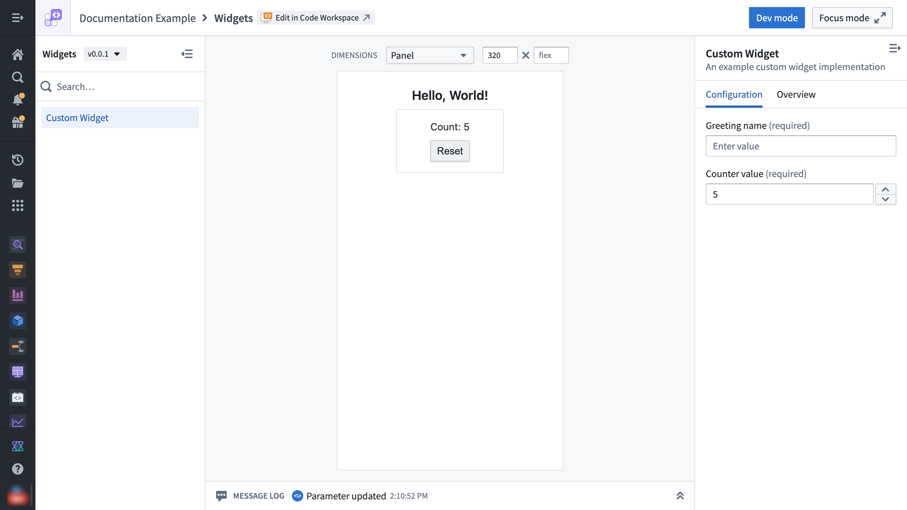

Custom widgets enable application builders to securely extend Foundry applications with custom frontend code. Currently, custom widgets are only supported in Workshop.

With custom widgets, technical builders can implement functionality that is not available out of the box. They can provide a tailored experience without creating a standalone custom application.
Examples of custom widgets include:
For common custom widget issues, see Troubleshooting.